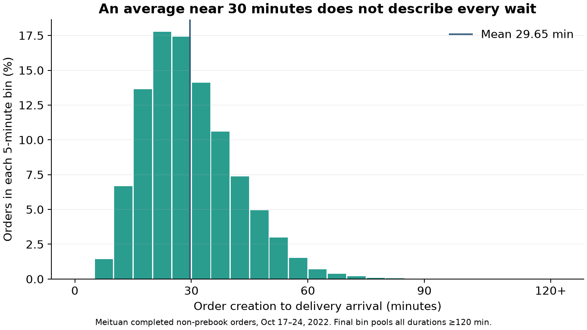

Was Your Delivery Slow—or Was Your Sample Unlucky?
Bootstrap intervals and hypothesis tests using real Meituan deliveries.
Dinner took forever. Your last few orders felt slow, too. How much can a handful of deliveries tell you about average waiting time? The answer requires separating individual experiences, uncertainty about a mean, and evidence against a benchmark.
1. Real orders, uneven waits
Meituan is a Chinese food-delivery platform, comparable to DoorDash or Uber Eats. I use its official INFORMS TSL research dataset, retaining 546,364 completed, non-prebook orders dated October 17–24, 2022. Waiting time is delivery arrival minus order creation, in minutes—not just the courier’s travel time. Rejected assignment attempts are not separate completed orders; zero timestamps mean unavailable.
The retained reference set averages 29.65 minutes, with a median of 27.90. Yet 10.9% exceed 45 minutes. An average near half an hour can coexist with many frustrating waits.
I retain 81 waits over 120 minutes, including a maximum of 645.42 minutes. These extreme timestamps cannot be independently validated. Excluding waits over 120 minutes changes the mean to 29.62 minutes, a small change; the main analysis keeps them.

For the experiments, treat these recorded durations as a fixed empirical population, drawing independently with replacement. We pretend the analyst sees only a small sample; the full reference set supplies the known mean for checking coverage, not for constructing that sample’s interval or test. The observations are real; the repeated samples are simulated.
2. One sample, many possible averages
The default example uses a fixed-seed sample of 100 orders and a 95% confidence level. Its mean is 29.86 minutes. Resample those same 100 observations with replacement 1,999 times, always keeping sample size 100, and calculate each resample’s mean. These are not new orders: the bootstrap approximates sampling uncertainty using the observed sample.
The middle 95% of bootstrap means gives a percentile interval of 27.59–32.24 minutes. Switch the controls to compare settings: chart summaries update, while prose examples retain their stated settings.
Change sample size to compare nested, fixed-seed samples. Change confidence to see the width–coverage trade-off. These are precomputed, reproducible experiments, not fresh simulations each time you click. Hover or tap for details.
Figure 2. Green bars: resampled means; green boundaries and shading: selected interval; dotted blue line: original sample mean. Source: author’s resampling of real Meituan deliveries.
3. Does “95%” actually work 95% of the time?
Now draw 1,000 new samples from the full reference distribution. For each, restart the bootstrap and construct a new interval. Because we know the reference mean, we can count successes. At n = 100, the 95% procedure covers it in 95.5% of experiments; at n = 20 and 400, coverage is 92.8% and 95.0%. Small samples need not achieve the label’s promise.
Figure 3. Green intervals cover the fixed reference mean; orange ones miss. Dashed blue line: reference mean. More Monte Carlo repetitions stabilize the estimated coverage; they do not repair a poorly calibrated interval. The first 60 experiments are displayed without selection.
The 95% describes repeated use of the procedure, not a 95% probability assigned to the fixed mean after seeing one interval. Nor is it a range containing 95% of individual delivery times. A narrower interval from a larger sample does not make your next dinner arrive more predictably.
4. Is there evidence that the mean exceeds 30 minutes?
Use a one-sided test: H₀: μ = 30 versus H₁: μ > 30. Thirty minutes is an illustrative benchmark, not a platform guarantee. Subtract the sample mean from each sampled duration and add 30, imposing the null before resampling. Generate 9,999 null samples and calculate T = sample mean − 30. This sample-centered bootstrap test approximates the null distribution; it is not an exact test for every possible delivery-time distribution.
Figure 4. Green line: observed statistic. Dashed orange line: approximate 95th percentile of the null distribution; the right tail is the 5% rejection region. Bin coloring approximates that boundary; p is calculated from individual simulated statistics, not histogram bars. Source: sample-centered empirical-null simulation. The test stays at α = 0.05 when interval confidence changes.
The p-value counts null statistics at least as large as observed, using (extreme count + 1)/(9,999 + 1). For the default 100-order sample, p = 0.5452, so do not reject the 30-minute null. This is not the probability that H₀ is true, and failing to reject does not prove equality. The one-sided test and two-sided interval are different procedures.
Takeaway: a slow dinner is not a statistical verdict
More representative observations—not more resamples of the same few orders—provide more information about the service. The first figure shows why individual waits vary. The bootstrap quantifies uncertainty from one sample; repeated sampling checks its coverage; the null simulation asks whether an observed mean is unusually high under a stated benchmark.
As an illustration, the default 100-order sample gives a 95% interval of 27.59–32.24 minutes, and the one-sided test provides insufficient evidence that the mean exceeds 30 minutes. This is an example of interpreting uncertainty, not a verdict on the platform.
Real orders can share couriers, merchants and demand conditions. The independent-draw experiment deliberately removes that dependence; its coverage is not a guarantee for convenience samples or correlated customer histories. The data describe this historical release, not all customers. Without a comparison across periods, they cannot establish whether service has become slower or why.
Sources and reproducibility
This research was supported by data provided by Meituan. To respect the publisher’s redistribution restrictions, raw order records are not included in this repository. The replication guide provides the official download link and code to obtain the exact data version used, plus cleaning rules, seeds and saved outputs. Methods: percentile bootstrap documentation and Hesterberg’s discussion of bootstrap accuracy.